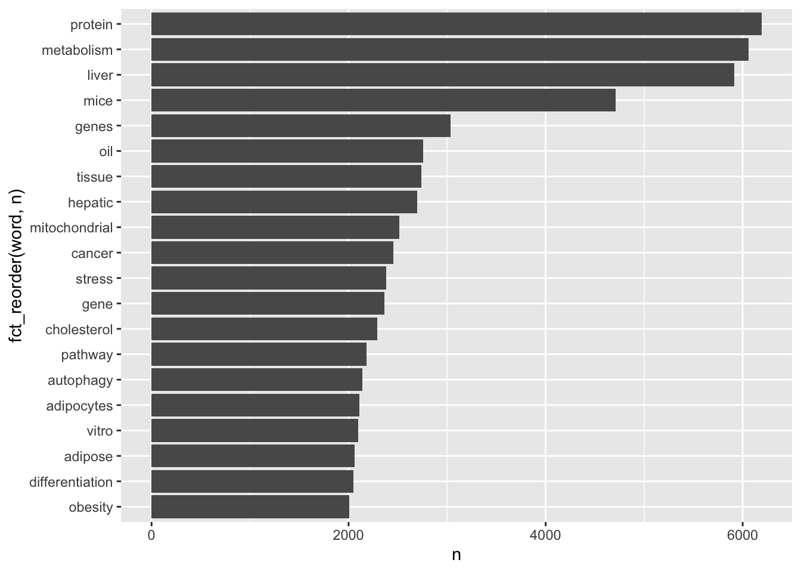
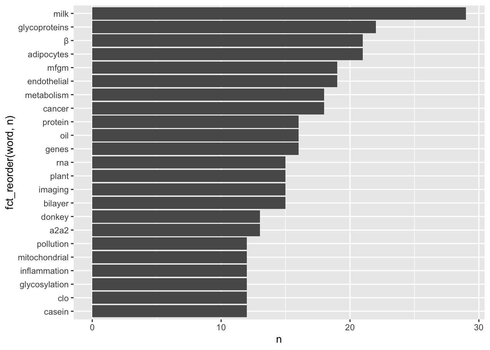
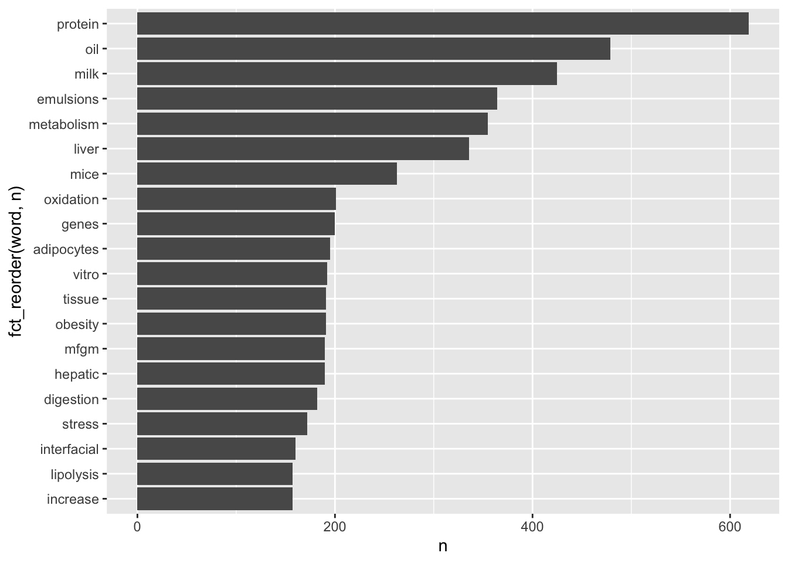
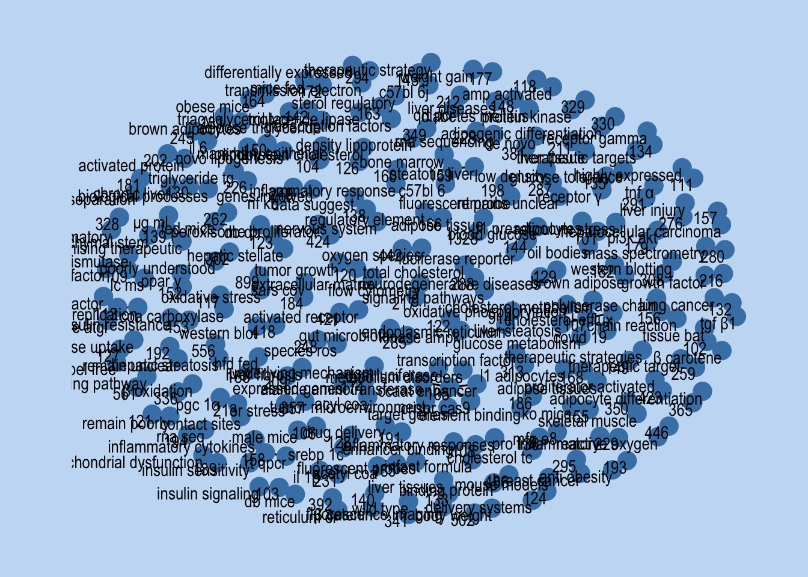
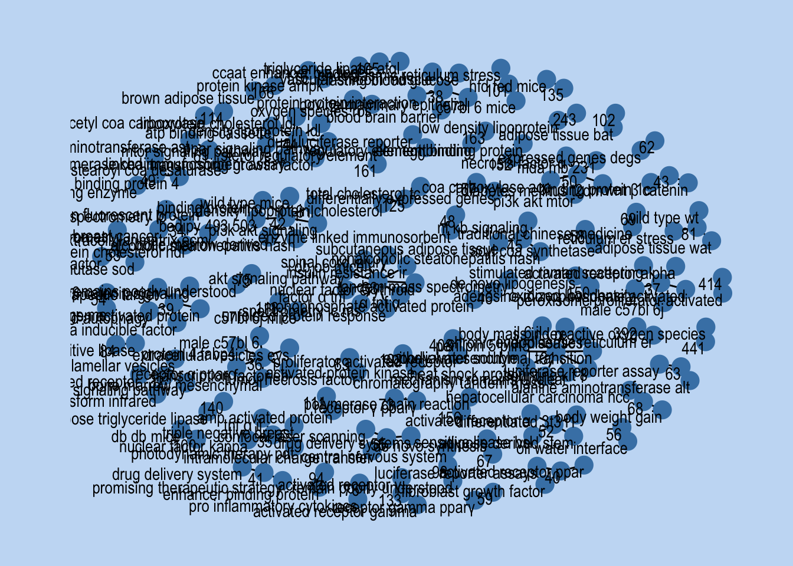
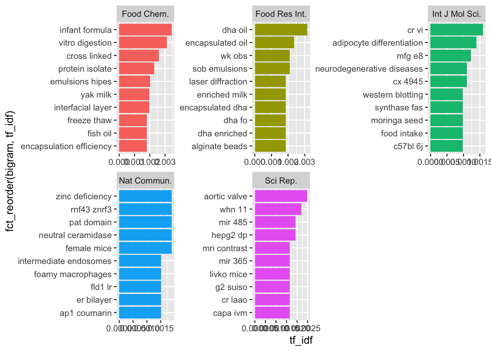
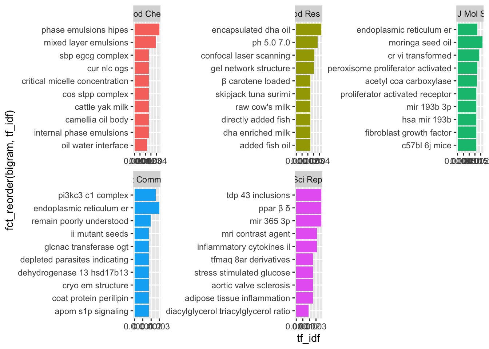

# A tibble: 5 × 2
FA n
<chr> <int>
1 Wang Y 56
2 Zhang Y 56
3 Li Y 55
4 Li X 38
5 Liu Y 34PubMed Text Analysis
SDS 264 Spring 2026 - Mini Project 1
Introduction and Rationale
The prevalent undergoing research done in the Biology Department at St. Olaf specifically on Lipid Droplet in Tetrahymena thermophila has inspired the initiation of this project. Here I propose to investigate literature on the general topic of “Lipid Droplet” or LD, which is known to be an important biomarker in many pathological diseases. Given their importance across many biological systems and the increasing amount of research tied to LDs, it is valuable and highly interesting for me to examine how research on lipid droplets has evolved over time and how knowledge within this field is being generated.
Inspired from “Literature Based Discovery” or LBD and the fact that researchers are always trying to be on top of new discoveries or new publications, I would like to see and uncover lipid droplet research trends, and other things associated with it (e.g. Who (is/are) the currently most active researchers for LDs research based on this data set? What are the most frequent keywords appearing when we are exploring this particular research field?). Scientific literature is growing at an exponential rate causing researchers to become increasingly specialized, and making it difficult for researchers to stay current in even their narrow discipline. There is too much information for anyone to read, much less understand. This overwhelming volume of publications has led to specialized, non-interacting literature, creating isolated knowledge in which discoveries in one specific area are not known by people who are doing research by the field next door. LBD has a goal of increasing interdisciplinary through prompt and more accessible information sharing, using the resources that are available out there without us realising it in order to increase the impact of scientific literature even further. LBD is then a necessary tool for facilitating research. LBD has led to countless discovery proposals ranging from treatments for cataracts, multiple sclerosis, and Parkinson’s Disease, to understanding and discovering new health benefits of curcumin, and potential treatments for cancer.
In this data science project, I would not be carrying any sophisticated scientific analysis on LDs literature due to constraint in time and whatnot. However, I would have this personal motivation at the back of my head as I am going through this project, as something that I could potentially revisit for a larger project with more well-founded, clear, and impactful goals towards scientific discoveries and literacy. Thus, this project will be more focused in data exploratory and finding out what one can do with a compilation of scientific literature made into a data set.
Webscraping and Data Production
PubMed is an openly accessible, free database which includes primarily the database of references and abstracts on life sciences and biomedical topics. Owing to that, I was able to webscrape their rich literary archives, specifically on Lipid Droplet. In order to do that, I used an automated protocol to specifically scrape PubMed database created by the user erilu on Github. The protocol used python to automate the construction of the URLs associated with webscraping, execution of the “search” and “fetch” commands, and parse each part of the abstract (Authors, Journal, Date of publication, etc.) into a data file for further reproducible analysis. As a result from this programming script, each abstract from each scientific article can be analyzed to quickly extract numerical data or quantitative results.
The python script that was run in R and established my data sets (abstracts.csv and abstracts_lipid.csv) can be found in my MP1 Github repository here.
Data Wrangling & Tidying
Following a good data science workflow methodology, where one is supposed to do data wrangling in another document and then plugging it back in into a separate document designated for data analysis, the complete data wrangling and tidying can be found in my MP1 Github repository here. This document also contains my main usage of str_functions and regular expressions.
Text Analysis
When I first examined the fresh data set generated by the python script, I was highly curious who is the most published author in this PubMed data set, with the topic of Lipid Droplet. So, my text analysis started modest and simple, let’s see who is the major “First Author”, which is most of the times regarded as the most significant intellectual, experimental, and writing contributor to a research paper. When a paper is cited, that first author is usually who will be referenced to, both through bibliography or through word of mouth. Let’s see who is the major “First Author” in this data set.
# A tibble: 239 × 2
FA FA_institution
<chr> <chr>
1 Li Y "Department of Traditional Chinese Medicine, Wuhan Fourth Hospital."
2 Wang Y "Department of Rehabilitation, The Fourth Clinical Medical College o…
3 Zhang Y "Department of Animal Science, College of Agriculture, Yanbian Unive…
4 Zhang Y "Department of Anesthesiology, Wuhan University, Renmin Hospital, Wu…
5 Li Y "Shanghai Key Laboratory of Orthopedic Implants, Department of Ortho…
6 Li Y "Key Laboratory of Carbohydrate Chemistry and Biotechnology, Ministr…
7 Li X "Key Laboratory of Animal Genetics, Breeding and Reproduction in the…
8 Wang Y "College of Animal & Veterinary Sciences, Southwest Minzu University…
9 Liu Y "Shaanxi Province Key Laboratory of Bioresources, QinLing-Bashan Mou…
10 Wang Y "Department of Clinical Pharmacology, College of Pharmacy, Dalian Me…
# ℹ 229 more rowsTurns out that many of them are all very common names, and after observing, we can almost conclusively say that each individual there is different, and they come from different institutions. So now, I check for a combination of author-institution.
Good enough for me! Even though I believe we missed a couple authors here and there, because of the enormous inconsistency in how the institution was reported in literature publications, we received some good results, and we can focus on this for our text analysis.
Note: The behind-the-scene codes can be found in my Github repository.
Joining with `by = join_by(word)`
Joining with `by = join_by(word)`
Joining with `by = join_by(word)`
Simple one-word analysis might be interesting in the beginning, but we can quickly realise that it is too hard to infer anything from it. Therefore, what we will do next is bigram or two-words analysis.
# A tibble: 254,566 × 2
bigram n
<chr> <int>
1 adipose tissue 1328
2 endoplasmic reticulum 914
3 oxidative stress 899
4 signaling pathway 561
5 hepatic steatosis 556
6 body weight 502
7 binding protein 486
8 insulin resistance 453
9 reactive oxygen 446
10 oxygen species 442
# ℹ 254,556 more rows# A tibble: 173,965 × 2
bigram n
<chr> <int>
1 reactive oxygen species 441
2 peroxisome proliferator activated 414
3 proliferator activated receptor 408
4 endoplasmic reticulum er 392
5 oxygen species ros 244
6 low density lipoprotein 243
7 activated protein kinase 192
8 brown adipose tissue 166
9 regulatory element binding 163
10 sterol regulatory element 161
# ℹ 173,955 more rows# A tibble: 1,593 × 2
bigram n
<chr> <int>
1 clo pxgs 11
2 ps nps 10
3 β casein 10
4 mfgm glycoproteins 9
5 rna seq 6
6 ga ch 5
7 marine fish 5
8 mrna isoforms 5
9 tpa cyp 5
10 tpa trdn 5
# ℹ 1,583 more rows# A tibble: 768 × 2
bigram n
<chr> <int>
1 a2 β casein 4
2 β carboline alkaloid 3
3 adipose tissue browning 2
4 base cross linking 2
5 bilayer contact angle 2
6 branchial epithelial liftings 2
7 camellia oil body 2
8 casein genotype a1a1 2
9 casein milk variant 2
10 cc bonds equalled 2
# ℹ 758 more rowsWe have got the relevant two-words and three-words combination. Now, it is time to visualise these combinations using a network graph.


Another interesting analysis we can do is finding tf-idf statistics. It is highly useful in the application of search engines, as this is the statistics behind ranking document in relevance to a query. Through this statistics, we can identify the most descriptive words in a document. In this case, I would try to find the important words for the content of Top 5 Journal Publishers for LD research. In this case, tf-idf will find the important words of each journal by decreasing the weight for commonly used words and increasing the weight for words that are not used very much in a collection of articles We want to find words that may or may not define one journal as opposed to others.
# A tibble: 5 × 2
j_name freq
<chr> <int>
1 Int J Mol Sci. 279
2 Food Chem. 160
3 Sci Rep. 128
4 Food Res Int. 124
5 Nat Commun. 112We have the Top 5 journals listed above, some of them are specialising in food science, some are in molecular science, and the rest are in general natural sciences, including physics, chemistry, earth sciences, medicine, and biology.


Results
Interestingly, there are many instances where word combinations such as ‘remain elusive’, ‘remain poorly understood’, ‘remain unclear’ score pretty high in terms of the number of occurrences. As this was not the kind of term combination I was looking for, coming across this phrase across different categories was definitely unexpected yet evoking another realisation that there are still many things we do not not about the mechanisms or LDs despite its important function and despite the whopping number of scientific articles available for it. This makes text analysis such as this even more important, because only through this way we could provide communication bridges between authors investigating the same niche problem, which otherwise would be impossible due the amount of articles available online. Scientists could definitely meet in conferences, but distance and cost aspects are constraints that sometimes come in between in this valuable knowledge sharing.
When looking at the list of common two or three words combination, I saw many combinations that include “strange”, “unfamiliar”, and “improper” words, such as “clo pxgs” and “tpa cyp”. While at first they might seem abstract and irrelevant for people outside of the field, I reckon how they might be a name that scientists created for protein or any important part of the research methodology. Turns out, “clo pxgs” is the name of the protein sitting outside of the LD surface and “tpa cyp” is a name of fluorescent dye used for tracking LDs in research. Even though these terms feel distant at first and it is hard to understand directly what and why it is correlated with LD, with some quick google search or filtering in my data set, I was able to know what kind of LD research these keywords are associated with. I understand as well that these primary analysis might not be the best for people outside of the science field and that is why the goal of this kind of text analysis is very specific, which is to unpack various LD research findings.
Conclusion and Future Projects
There are many limitations in this project and the process I undertook, which some of them I have conveyed throughout my narrative. The data set could have been cleaned even further and there are many string elements that could be extracted and explored. For example, I did not play that much with author information, which would provide valuable information about the top leading departments and institutiona for LD research. Therefore, a bigger and more extensive analysis on scientific literature compilation is definitely possible. Another possibility is also to extract full article texts, to do a more full-on sentence by sentence investigation. Though I believe only extracting abstracts might be more suitable for word to word analysis, because the point of abstract to give brief summary using important keywords, so we should be effectively getting good results from there. Limiting only to “most popular papers” on certain topic, however, should be avoided because it defies the purpose of exploring each unique and distinct crevasses of observations.